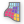

 SmartClustering
Component Index > SmartForm > SmartForm 1 Smart Modifiers > SmartClustering
Clusters a set of panels or nodes
Inputs
| Name | ID | Description | Type |
|---|---|---|---|
| SMesh | Input a SmartMesh to cluster | SGMesh | |
| N | The number of clusters wanted. Use this or the tolerance to define what you want to set as the cluster factor | Integer | |
| α-tol | The maxmimum angle deviance allowed between the bars of the new node and the original in the normal plane of the node. Given in degrees. | Number | |
| β-tol | The maximum angle deviance allowed between the bars of the new node and the original in the plane perpendicular to the normal plane of the node. Given in degrees. | Number | |
| γ-tol | The maximum angle deviance allowed in regards to the rotation of the bars around their own axis. Given in degrees. | Number |
Outputs
| Name | ID | Description | Type |
|---|---|---|---|
| SMesh | The Clustered Mesh | SGMesh | |
| Bar | The orentation of the bar centre lines for the nodes | Line | |
| γdir | The rotated orientation of the bar connection | Line | |
| Brep | The Breps representing the clustered panels | Brep | |
| Cluster | The cluster the corresponding panel belong to | Integer | |
| Δα | The angle between the bars of the new node and the original in the normal plane of the node. Given in degrees. | Number | |
| Δβ | The angle deviance between the bars of the new node and the original in the plane perpendicular to the normal plane of the node. Given in degrees. | Number | |
| Δγ | The angle deviance in regards to the rotation of the bars around their own axis. Given in degrees. | Number |
Copyright © 2016 Robert McNeel & Associates.